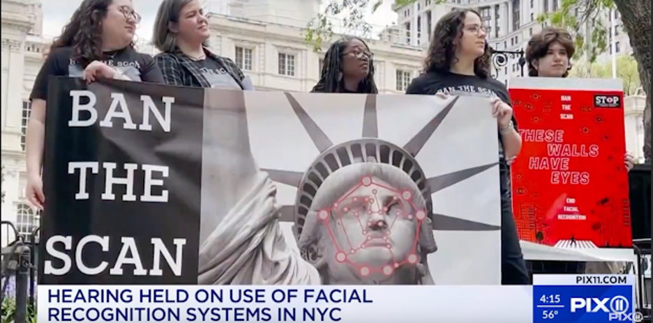
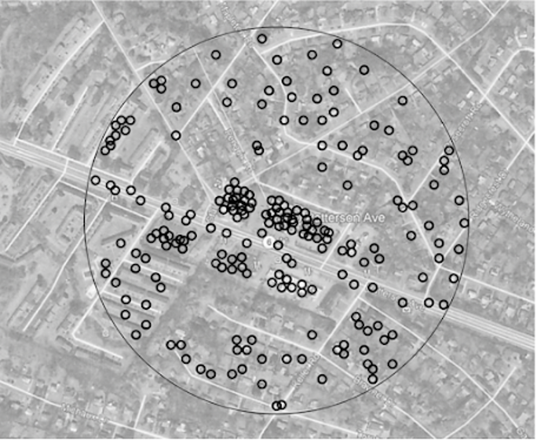
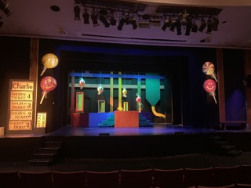

PROJECTS
SENIOR FOCUS PROJECT
2022-2023
Throughout my senior year of high school I was part of a program called Senior Focus, where I spent a year researching the effect of mass surveillance on abotion access post-Roe. At the end of the year I won an award for the paper I wrote.
The central question of the project was: HOW DOES MASS SURVEILLANCE AFFECT THE STATE OF REPRODUCTIVE RIGHTS AFTER THE FALL OF ROE V. WADE AND WHAT CAN BE DONE TO PROTECT THEM IN THE FUTURE?


Both files are hosted on OneDrive.
TECHNICAL THEATER
2020-2023
Throughout high school I was very involved with technical theater, as a carpenter, spot operator, and lighting designer. Here are some of the productions I worked on:

Willy Wonka Jr. (March 2023) - Carpentry and Lighting Design